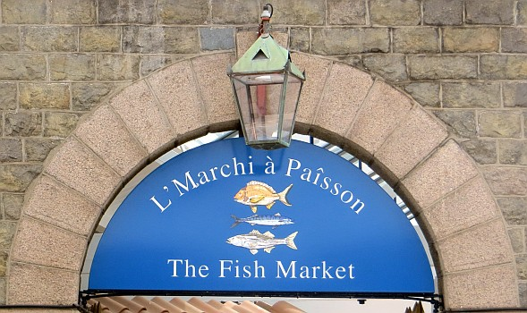

| Jèrriais | Angliais |
|
des paîssons |
|
| d's anchouais | anchovy |
| eune andgulle | conger-eel |
| eune andgulle dg'ieau douoche | fresh water eel |
| un ange | angelshark, monkfish |
| un ange dé mé | angelfish; angelshark, monkfish |
| un bar | bass |
| un bideau | small whiting |
| un bliu | smooth hound (Mustelus mustelus) |
| eune bliue brême | black bream |
| un bouffon d'mé | clownfish |
| un bouothé (bouosé à La Rocque ) | flobber, whiting pout |
| eune brême | black bream, red bream |
| eune brille / un bril | brill |
| un brochet | pike (La Rocque) |
| un brotchet | species of dog fish, picked dogfish |
| un brotchu | species of dog fish |
| un cabot (gris, brun) | species of blenny |
| un cabot du dgiâbl'ye | father lasher, sting-fish, short-spined sea scorpion |
| un capelain | caplin |
| eune carpe | carp |
| la cârrée | ray, skate |
| un cârré | horse-mackerel |
| la carpe | carp |
| un cat | common dab, brill, topknot, flounder |
| eune catte dé rotchi | topknot |
| un célérin | gudgeon, groundling, black goby |
| eune chânaise, un pétot, eune pitonne | cuckoo wrasse (female), corkwing wrasse |
| un cheurque | shark |
| un co | crested blenny, tompot blenny, rock cook, rock cock, small-mouthed wrasse |
| un co d'rotchi, un co d'la rocque | rock cook, rock cock, small-mouthed wrasse |
| un co journieaux | species of blenny |
| un colîn | coalfish |
| un coucou | striped wrasse |
| un couotheux | large ballan wrasse, small grey mullet |
| un crapaud, crapaud d'mé | long-spined sea scorpion, sting-fish, father lasher |
| eune d'mouaîselle | smooth hound (Mustelus mustelus); spiny dogfish, picked dogfish (Squalus acanthias) |
| la douoche | butterfish |
| un dravan | large skate, grey skate |
| un êpîlé | rock fish, ballan wrasse |
| eune êpinnoche | stickleback, 15-spined stickleback |
| eune êpinnoche dg'ieau douoche | 3-spined stickleback |
| d's esprots | sprats |
| un esturgeon | sturgeon |
| eune filerêsse | small conger |
| un fliabeu , un fliabé, un fliabot | flobber, whiting pout, bib, power cod |
| la fliandre | flounder |
| eune fliée, eune fliaue | ray, grey skate, true skate |
| un fliêtan | halibut |
| la flyînte, la flyie | twaite shad |
| la flyînte, la flyie | allis shad |
| un grasdos | smelt, silver sides |
| lé grondîn | gurnet, sea bullhead, father lasher, sea scorpion, short-spined cottus, gurnard |
| lé gronnard | grey gurnard |
| lé gronneux | grey gurnard |
| lé halibot | halibut |
| un haû | tope, white hound |
| un haut | dogfish species |
| un héthan | herring |
| un rouoge héthan | red herring |
| l'héthique | haddock |
| un Jean-doré | John Dory |
| un j'va d'mé | seahorse |
| un j'va d'mé à p'tit mûsé | short-snouted seahorse |
| un lanchon | sand eel |
| un lieu (des lieus), un ieu (des ieus) | whiting |
| un nièr lieu, un nièr ieu | coalfish |
| un lîn | ling, large whiting |
| lé longnez | pipefish |
| un grand longnez | greater pipefish |
| la louoche | loach |
| un maqu'thé | mackerel |
| un mataûd | species of dog fish, lesser spotted dogfish |
| eune mèrluche | hake |
| un minnistre | twaite shad |
| un mouaine | angelshark, monkfish, fiddle-fish |
| eune mouaithe | lobster (female) |
| eune mouothue | cod |
| un mulet, un gris mulet | grey mullet |
| un rouoge mulet | red mullet, lesser grey mullet |
| un nièr lieu | coalfish |
| un orfi | garfish, snipe |
| un ouothillard | grey mullet |
| un paffot | lumpsucker |
| lé paîsson à pouchettes | angler-fish |
| la pèrche | perch |
| un pèrlé, un pielé, un peurlîn | ballan wrasse |
| un pétot, des pétchiots, des pitonnes, des pitounnes | small ballan wrasse |
| eune pliaie | plaice |
| eune poule dg'ieau | lump-sucker |
| du p'tit héthan | sprats |
| eune raie | skate, ray |
| eune raietelle, eune rêtelle | small skate, small ray |
| eune raie à didget | stingray |
| la raînotte dé mé | angler-fish |
| un r'nard | sea-trout, bull-trout, common thresher |
| lé rouoge paîsson | goldfish |
| un rouoget | red gurnard |
| eune rousse | species of dog fish, greater spotted dogfish, lesser spotted dogfish |
| un roussé, un rousset | greater spotted dogfish, lesser spotted dogfish |
| eune roussette | lesser spotted dogfish |
| eune sarde | small red bream, lesser weever |
| eune sardinne | sardine, sprat |
| du saumon | salmon, sea-trout, bull-trout |
| lé scolpîn | frogfish, monk, angler, fishing frog |
| eune sole | sole |
| eune sole dé rotchi | rock sole, topknot |
| un solé | sunfish |
| eune tabûle | whiting pout (St. Ouën), poor cod |
| eune tambour | lump-sucker |
| la tanche | tench |
| un tchian d'mé | species of dog fish |
| la tchilieuvre dé mé | butterfish |
| eune têgrêsse, eune tîngrelle, eune tîngue-raie, eune tigre-raie, eune raie à didget | stingray |
| du têtu | fry |
| eune trie | corkwing wrasse |
| eune truite | trout |
| un turbot | turbot |
| un vidan | large whiting |
| un violon | angelshark, monkfish |
| un vithelîn | species of dragonet, lesser weever |
| d'la v'nîse | white bait |
| un vra, un vra d'mouoilliéthe, un vèrt dos, eune vèrte coue, un forgeux, un nièr vra | rock fish, ballan wrasse |
| un vra véthitabl'ye | ballan wrasse, comber wrasse |
| un zèbre | greater weever |
| paîsson sâbreux | swordfish |
| un haû | white hound, tope (Galeorhinus galeus) |
| un pécheux du Dînmanche rîlyi | striped snailfish |
| eune raie marbrée | marbled electric ray |
|
des bêtes à êcales |
|
| un baîni | limpet |
| un bé d'corbîn | mussel |
| eune bobbe | common cockle (dans l'Est) |
| des callifichieaux | queens |
| un vlicot (gris, nièr, jaune) | winkle (grey, black, yellow) |
| un vlicot à tchian | netted dog whelk |
| eune vlique | whelk |
| eune vlique suaïse | small whelk (dans l'Est) |
| eune hître | oyster |
| eune hître dé rocque | saddle, horse or crow oyster |
| colînmachon d'mé à pid d'fé | scaly-foot snail |
| eune Lînmache dé mé à rouoges pitchets | Scarlet lady sea-slug (Coryphella browni) |
| eune sordonne à cônet | Royal flush sea slug (Akera bullata) |
| eune sordonne à rouoges pitchets | Scarlet lady sea-slug (Coryphella browni) |
| un rouoge-pitchet | Scarlet lady sea-slug (Coryphella browni) |
| eune Rouoge-brînge | Scarlet lady sea-slug (Coryphella browni) |
| eune chorchiéthe | dog whelk |
| un manchot | razor fish |
| un vlicot à tchian | netted dog whelk (Nassarius reticulatus) |
|
un baîni |
limpet |
|
un bé d'corbîn |
mussel |
|
eune chuchette |
cockle |
|
eune néthe coque |
black winkle |
|
eune coqueluche |
whelk |
|
un châté, eune tope, un vlicot d'Espangne |
top shell Trochus |
|
un châté, eune églyise, eune vlique d'églyise |
wentletrap Scalaria |
| un jaune vlicot | flat periwinkle (Littorina obtusata) |
| un ormèr | ormer |
| un orté dé g'niche | mussel |
| eune scalope | scallop |
| eune seiche | species of cuttle fish |
| eune pieuvre | octopus |
| un vanné | scallop |
| eune chuchette | common cockle |
| un cônet | species of cuttlefish |
| eune coque | cockle |
| eune coque à j'vaux | dog whelk |
| eune néthe coque | black winkle |
| eune coqueluche | whelk |
| un baîni à bliues rîl'yes | blue rayed limpet |
| eune vlique dé sou d'l'Arctique | arctic cowrie |
| un rude châté | rough top shell |
| eune vèrte fielle dé mé | sap sucking sea slug, Solar-powered sea slug (Elysia viridis) |
| eune fielle dé mé | sacoglossan sea slug |
| eune lînmache dé mé sé-et-paîvre | salt and pepper nudibranch |
| eune sordonne | sea-hare |
|
du crabîn |
|
| du crabîn | small crabs in general |
| un couotheux | type of lobster |
| un chancre | Guernsey crab |
| d'la grosse chèrvette | prawns |
| d'la p'tite chèrvette | shrimps |
| eune couôrrêsse | shore crab |
| eune chouque | lobster (larger than normal) |
| un trapenard | four-horned spider crab |
| un tréhar | slender-legged spider crab |
| un sauticot | sand hopper |
| eune chèrvette dé pèrtu | vent shrimp |
| eune chèrvette crotchie | hooded shrimp |
| eune lipotte | burrowing prawn |
| du chèrvîn | species of shrimp |
| eune crabe à co | crayfish |
| eune crabe grégeaise | lady crab |
| eune rouoge crabe | wrinkled crab |
| eune vèrte crabe | shore crab |
| des d'mouaiselles | small blue winkles, also species of small crab |
| eune êcrelle | freshwater shrimp, scaly lobster |
| eune êcrévette | langoustine |
| eune êcrévisse | scaly lobster |
| eune fouaitheuse | shore crab |
| eune couôrrêsse Âsiatique | asian shore crab |
| eune franche crabe | edible crab (young) |
| un honmard | lobster |
| un critchet | lobster (small) |
| un quart | lobster (quarter size) |
| eune vielle, eune vielle crabe | wrinkled crab |
| un d'mi | lobster (half size) |
| un honmard dé prix | lobster (full size) |
| un houais, un ouais | Guernsey crab |
| un pouaingclios | Guernsey crab |
| eune pihangne | spider crab |
| eune crabe à Risso | Risso's crab |
| eune crabe faûtôme, eune crabe èrvénante, eune crabe d'la blianche femme | scorpion spider crab |
| eune grise porcélaine | broad-clawed porcelain crab |
| eune crabe codrette | Bryer's nut crab |
| un pêtre à pipet | Gangly lancer sea-spider Nymphon gracile |
|
des molles bêtes |
|
| eune leune | jelly-fish |
| d'la mousse | soft coral |
| eune êponge en boursicot | Purse Sponge (Scypha ciliata) |
| eune êponge en jaune dé | Yellow Finger Sponge (Axinella dissimilis) |
| des rouoges et jaunes êponges | red and orange sponges |
| d's êponges en rouoge | red sea fingers |
| eune leune en bathi | barrel jellyfish |
| eune leune ès ars du vent | compass jellyfish |
|
des mammiféthes |
|
| un pourpais | porpoise |
| un dauphîn | dolphin |
| des grands dauphîns | bottlenose dolphins |
|
eune baleine |
whale |
|
eune bliue baleine |
|
|
un bal'not |
young whale |
|
des vèrs |
|
| du vèr dé rotchi, du vèr dé rocque | rock-worm |
| du sandron | worm for bait |
| d'la catte | worm for bait |
| un avithon d'mé | paddle worm |
| un vèr en riban | ribbon worm |
| un vèr êpouss'teux | feather duster worm |
| un pliat vèr rîlyi | candy-striped flatworm |
|
des bêtes à pitchets |
|
| eune etaile dé mé | starfish |
| eune tenvrile dé mé | brittle star |
| eune êtaile à candelles | spiny starfish |
| un tchoeu d'mé | heart urchin |
| eune cocombre dé mé | sea cucumber |
| eune tenvrile dé mé à la tchilieuvre | Serpents' table brittle star (Ophiura albida) |
| eune tenvrile à la tchilieuvre | Serpents' table brittle star (Ophiura albida) |
| un con d'sablion | Clockface anemone (Peachia cylindrica) |
| un con d'mîntîn | Clockface anemone (Peachia cylindrica) |
| un mîntîn d'sablion | Clockface anemone (Peachia cylindrica) |
| eune bênacl'ye à r'nâcl'yes | Crab hacker barnacle (Sacculina carcini) |
| un pîssenliet d'mé | Fountain anemone Sagartiogeton laceratus |
| un tchoeu vâseux | Spiny mudlark (Brissopsis lyrifera) |
| un tchoeu d'vâse | Spiny mudlark (Brissopsis lyrifera) |
| des bijoux d'rotchi | jewel anemones |
| un bijou d'rotchi | jewel anemone |
| eune frâse dé rotchi | strawberry anemone |
| des couossîns d'mé, des couossièrs dé mé | cushion stars |
|
un con d'rotchi |
sea anemone |
|
eune ortchie d'mé |
snakelocks anemone |
|
des câsatchis |
|
| un câsatchi | tunicate |
| eune êclyich'rêsse dé mé | sea-squirt |
| eune êclyich'rêsse | sea squirt |
| eune êclyich'rêsse en lampion | Light Bulb Sea Squirt (Clavelina lepadiformis) |
| eune grande êclyich'rêsse | Neptune's heart sea squirt (Phallusia mammillata) |
| eune rouoge êclyich'rêsse | Red Sea Squirt (Polysyncraton lacazei) |
| eune êclyich'rêsse en grouaîsile | Gooseberry Sea Squirt (Dendrodoa grossularia) |
| eune êclyich'rêsse en êtaile | Star Squirt (Botryllus schlosseri) |

Viyiz étout: